Практичні курси · журнал «ДентАрт» 2017 №3
Невідкладні стани на стоматологічному прийомі. Частина І. А чи знаєте ви, коли і як користуватися дефібрилятором?
PART I. DO YOU KNOW WHEN AND HOW TO USE A DEFIBRILLATOR?
Більшість зупинок кровообігу розпочинаються саме з фібриляції шлуночків чи шлуночкової тахікардії, тобто зі змін серцевого ритму, за яких відсутні пульс та дихання. Базова підтримка життєздатності (BLS) і поглиблена серцево-судинна підтримка життя (ACLS), включаючи ранню дефібриляцію, та післяреанімаційна підтримка — це заходи, що характеризують набір навичок і знань, які застосовуються послідовно під час лікування пацієнтів, у яких настала різка зупинка кровообігу.
Статистика свідчить, що багато життів могли б бути врятовані, якби людина, що опинилася на місці події, володіла прийомами першої допомоги та серцево-легеневої реанімації (СЛР). За кордоном сьогодні 100 млн осіб володіють прийомами СЛР. Скільки ж людей навчені цим прийомам в Україні? На жаль, таких даних немає.
Вважається, що організація постійних курсів з надання першої допомоги та СЛР повинна бути введена в ранг державної політики, тобто пріоритетних заходів, спрямованих на зменшення наслідків травматизму, різних нещасних випадків та екологічних катастроф у нашій країні. Адже багато наших співвітчизників, не отримавши своєчасно допомоги, якщо не помирають, то стають інвалідами на все життя. А тим часом можна врятувати людей із зупинкою серця або втратою свідомості в громадському місці чи далеко за містом, якщо хтось швидко надасть першу допомогу для підтримання життя, а потім викличе машину швидкої допомоги. Багато життів могли б бути врятовані, якби перша людина, котра прийшла на допомогу, володіла прийомами СЛР. Базова підтримка життя означає не тільки підтримання життєздатності, але й виграш часу до приїзду машини швидкої допомоги.
За різкої зупинки кровообігу (РЗК) ми маємо справу з чотирма видами порушень серцевого ритму. Це два дефібриляційних ритми (фібриляція шлуночків (Ventricular Fibrillation (VF) і шлуночкова тахікардія без пульсу (pulseless Ventricular Tachycardia (pVT) та два недефібриляційних ритми (рис. 1-2).
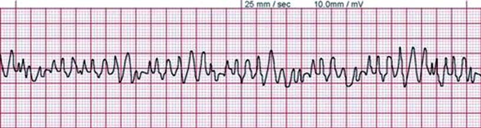
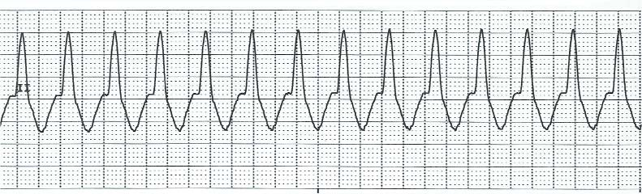
Рис. 1. VF. Рис. 2. VT.
Переважна кількість зупинок кровообігу починається саме з фібриляції шлуночків чи шлуночкової тахікардії, тобто зі зміни серцевого ритму. При настанні клінічної смерті серце не зупиняється, як показують у кінофільмах, воно змінює свій ритм на такий, що не дає пульсу, тобто серце працює, але неефективно. Ясна річ, серцево-легенева реанімація допоможе протримати пацієнта до приїзду медиків, але самої лише серцево-легеневої реанімації часто недостатньо для відновлення правильного серцевого ритму.
Дефібриляція, проведена медиками, які приїхали на машині швидкої допомоги, не може бути ранньою, бо робиться вона на 20-ій чи 30-ій хвилині. Запорукою виживання пацієнтів є дефібриляція у перші 3 хвилини після зупинки кровообігу. Отже, дефібрилятори повинні бути у місцях великого скупчення людей, спортивних залах, на підприємствах, у школах, університетах, не кажучи вже про лікарні та клініки, куди приходять люди з різною соматичною патологією.
Основною причиною функціональної зупинки серця (відсутність ефективного систолічного скорочення шлуночків) є фібриляція шлуночків, тобто безладне скорочення окремих груп м'язових волокон серця. Фібриляція шлуночків рідко відновлюється спонтанно до ритму, який забезпечує ефективний серцевий викид і адекватну перфузію головного мозку, тому для її усунення застосовується електрична дефібриляція. За неможливості провести негайну дефібриляцію слід почати закритий масаж серця і штучну вентиляцію легень (ШВЛ) у синхронному режимі 30:2. Треба припинити введення лікарських препаратів з позитивним хронотропним ефектом. Чим раніше проводиться дефібриляція, при підтвердженні дефібриляційного ритму, тим більша ймовірність позитивного ефекту від реанімаційних заходів.
Поява фібриляції завжди викликає припинення плину крові навіть у великих артеріях; тривала, понад 3-5 хвилин, фібриляція невблаганно веде до розвитку біологічної смерті, хоча окремі м'язові волокна міокарда можуть продовжувати скорочуватися ще багато хвилин. За гострої серцевої смерті припинення кровообігу майже завжди зумовлене раптовим настанням фібриляції шлуночків. Однак цілком певно можна говорити про наявність фібриляції шлуночків лише за даними електрокардіографічного дослідження. Слід мати на увазі, що тривала відсутність відновлення самостійних серцевих скорочень при ефективному зовнішньому масажі серця найчастіше свідчить про фібриляцію шлуночків і вимагає негайного застосування електричної дефібриляції.
Розрізняють три фази фібриляції шлуночків (VF), які розвиваються послідовно:
- електричну (це перші 4-5 хвилин), ефективним методом лікування якої є дефібриляція;
- циркуляторну (наступні 5-10 хвилин – пролонгована VF), ефективним методом лікування якої є попереднє проведення компресій грудної клітки і лише після цього дефібриляція;
- метаболічну – разом з електроімпульсним лікуванням потрібна метаболічна терапія.
Слід підкреслити, що безперервна компресія грудної клітки може бути корисною на ранніх стадіях VF в електричній і циркуляторній фазі, в той час як додаткова вентиляція легень більш значущою стає в пізню – метаболічну – фазу VF.
Електрична дефібриляція
Дефібриляція – це створення потужного електромагнітного імпульсу, що проходить через серце і викликає одночасно деполяризацію критичної маси міокардіоцитів, після чого може виникнути спонтанне скорочення серця. Прямий розряд дефібриляції повинен бути проведений якомога швидше після діагностики фібриляції шлуночків. Мета дефібриляції – надати можливість природному водієві ритму серця відновити нормальну активність. Встановлено, що за фібриляції шлуночків своєчасна дефібриляція є ефективнішою, ніж терапія лікарськими засобами.
В основі дефібриляції лежить пропускання через грудну клітку короткого (0,01 с) одиночного розряду електричного струму високої напруги, який викликає одномоментне збудження всіх волокон міокарда, відновлюючи тим самим правильні ритмічні скорочення серця. Для проведення цієї маніпуляції застосовують спеціальний прилад – електричний дефібрилятор.
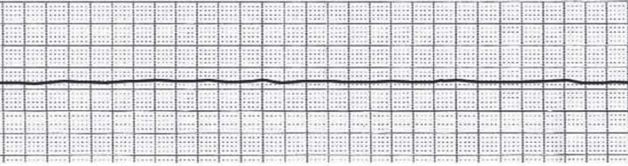
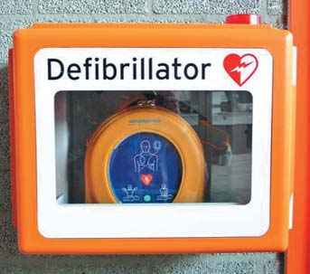
Наступні два порушення серцевого ритму, пов'язані із зупинкою серця, називаються недефібриляційними ритмами – це асистолія (asystole) і електрична активність серця без пульсу (Pulseless electrical activity (PEA) (рис. 3, 4).
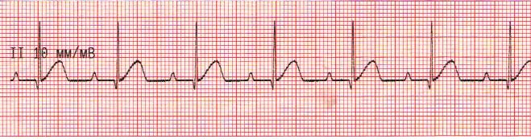
Основною відмінністю у лікуванні цих двох груп аритмій є необхідність проведення дефібриляції тільки у тих пацієнтів, у яких виявлено VF/PVT, і якнайшвидше внутрішньовенне введення адреналіну у поєднанні з якісною СЛР з мінімальними перервами при натисканні на грудну клітку у пацієнтів з недефібриляційними ритмами, а також забезпечення дихальних шляхів і вентиляції, створення венозного доступу, виявлення і корекція зворотних причин зупинки кровообігу, які є загальними для обох груп.
На ринку існують різні види дефібриляторів, які класифікуються в залежності від того, де вони зберігаються і хто може ними користуватися. Розрізняють електричну дефібриляцію серця: непряму (зовнішню), коли електроди дефібрилятора накладають на грудну клітку, і пряму, коли електроди накладають безпосередньо на серце при відкритій грудній клітці.
Дефібрилятори, які зберігаються у громадських місцях (аеропорти, залізничні вокзали, борт літака, супермаркети, спортивні майданчики, пляжі і т.д.), називаються автоматичними зовнішніми дефібриляторами – АЗД (або AED – Automatic External Defibrillator) (фото 1). Вони бувають автоматичними та напівавтоматичними. Із самої назви очевидно, що порушення серцевого ритму вони визначають автоматично і голосовою командою повідомляють про це рятувальника. Автоматичний дефібрилятор після відповідного голосового сповіщення сам виконає шоковий розряд, якщо вважатиме це за необхідне. Напівавтоматичний дефібрилятор запропонує рятувальникові натиснути кнопку (вона на ньому єдина, щоб не помилитися), як тільки пластини/електроди наберуть відповідного заряду і прилад буде готовий до розряду (фото 2).
АЗД подає команди мовою тієї країни, в якій він використовується. Такі прилади призначені для використання рятувальниками без медичної освіти. Але це не означає, що ними не повинні вміти користуватися і лікарі. Автоматичні зовнішні дефібрилятори – високоспеціалізовані надійні комп'ютеризовані пристрої, які за допомогою голосових та візуальних команд дозволяють особам як з медичною освітою, так і без неї провести процедуру безпечної дефібриляції у людей із зупинкою кровообігу. Технологічні досягнення, що особливо стосуються збільшення потужності акумуляторів та розвитку програм для аналізу ритму серця, дозволяють впровадити до масового використання відносно недорогі, надійні, легкі в обслуговуванні переносні дефібрилятори (фото 3).
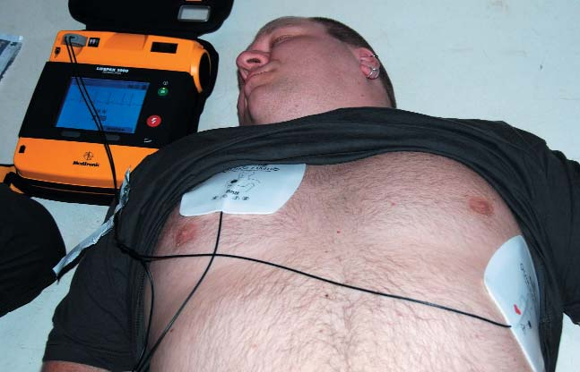
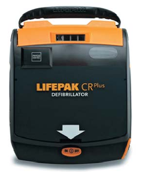
Фото 2. Фото 3.
Дефібриляція – ключовий елемент ланцюжка виживання і одна з небагатьох процедур, ефективність яких у підвищенні рівня виживання після зупинки кровообігу в механізмі VF/pVT доведена.
З кожною хвилиною від знепритомнення до моменту виконання дефібриляції, якщо вона потрібна, смертність зростає на 7-10%. Чим коротший проміжок часу від появи VF/pVT до розряду енергії, тим вища ймовірність ефективної дефібриляції, відновлення спонтанного кровообігу та самостійного дихання. Якщо настане будь-яке запізнення з доставкою дефібрилятора, слід негайно розпочати натискання грудної клітки та вентиляцію. Якщо СЛР виконується свідками випадку, ймовірність ефективної реанімації падає поступово і становить приблизно 3-4% на кожну хвилину від знепритомнення до моменту виконання дефібриляції. Початок проведення СЛР, незалежно від часу, який мине до виконання дефібриляції, може подвоїти або потроїти виживання у випадку поміченої зупинки кровообігу.
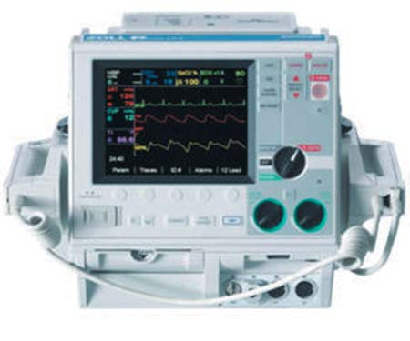
Ефективна дефібриляція означає припинення фібриляції шлуночків або, точніше, відсутність VF/pVT упродовж 5 секунд від електричного розряду, однак основна мета її застосування – повернення спонтанного кровообігу. Тому всі дефібрилятори мають три спільні риси:
- джерело постійного струму;
- конденсатор, який можна зарядити до енергії потрібного рівня;
- два електроди, які розміщуються на грудній клітці пацієнта і служать для проведення струму, що вивільняється з конденсатора (фото 4).
Крім цього, дефібрилятори за рівнем енергії, силою струму та формою хвиль поділяються на однофазні і двофазні. Оптимальна сила струму дефібриляції при застосуванні однофазної хвилі становить від 30 до 40 A. Численні докази, отримані при реєстрації струму, засвідчують, що сила струму дефібриляції при застосуванні двофазної хвилі становить від 15 до 20 A.
Однофазні дефібрилятори вже не випускаються, але багато з них і далі використовуються, оскільки їх ще багато в наших лікарнях. Ці прилади дають струм, який проходить лише в одному напрямку.
Кілька слів з приводу нижчої ефективності однофазної хвилі у порівнянні з двофазною. Енергія першої дефібриляції при застосуванні однофазного дефібрилятора повинна становити 360 Дж. Хоча вищі рівні енергії пов'язані з ризиком більшого пошкодження серцевого м'яза, однак корисність швидшого відновлення перфузійного ритму переважає. Двофазна хвиля дає імпульс струму, який протягом певного часу проходить у напрямку позитивного електрода, потім повертається і решту часу тривання розряду проходить у напрямку негативного електрода. Деякі типи двофазних дефібриляторів у широкому обсязі компенсують опір грудної клітки шляхом електронного достосування амплітуди та часу тривання хвилі розряду.
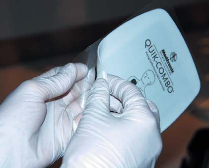
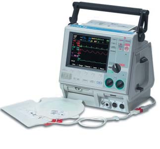
Фото 5. Фото 6.
Самоприклеювальні та класичні електроди
Самоприклеювальні електроди безпечніші та ефективніші, тому в порівнянні з класичними електродами їм надають перевагу. Їх особливо варто застосовувати в станах перед зупинкою кровообігу та у клінічних ситуаціях, коли доступ до пацієнта обмежений. Вони мають подібну до класичних електродів функцію визначення трансторакального імпедансу (і таку саму ефективність) та дають можливість виконати дефібриляцію з безпечної відстані від пацієнта без потреби схилятися над ним.
Дефібрилятори з режимом рекомендації дефібриляції (консультаційний режим) можуть аналізувати запис ЕКГ, однак рішення про виконання дефібриляції може прийняти тільки особа, яка має відповідні навички у розпізнаванні ритмів.
Правильність розпізнавання ритму серця автоматичними зовнішніми дефібриляторами детально перевірена в багатьох дослідженнях у дорослих і дітей. Ці пристрої досить точні в аналізі ритму. Незважаючи на те, що АЗД не призначені для виконання синхронізованих розрядів, усі АЗД дають команду виконати розряд при шлуночковій тахікардії (VT), якщо частота і морфологія зубця R перевищують запрограмовані величини. При цьому слід зазначити, що ряд досліджень використання АЗД лікарськими бригадами в умовах закладів охорони здоров'я показали зниження рівня виживання у порівнянні з використанням професійних дефібриляторів.
При застосуванні для початкового аналізу серцевого ритму як самоприклеювальні, так і класичні електроди дають можливість швидше виконати перший розряд у порівнянні зі стандартним способом моніторування за допомогою стандартних електродів ЕКГ (фото 5).
У нових протоколах рекомендується переважне використання адгезивних (самоприклеювальних) електродів у порівнянні зі стандартними електродами, оскільки засвідчено, що їх використання є зручнішим, вивільняє руки і дозволяє мінімізувати паузи перед проведенням дефібриляції. Усі сучасні моделі дефібриляторів поряд зі стандартними електродами комплектуються самоприклеювальними електродами (фото 6).
При проведенні зовнішньої дефібриляції можливі два варіанти розташування електродів:
- переднє, або стандартне, розташування, коли один електрод з маркуванням «Apex», або червоного кольору (позитивний електрод), розташовують у проекції верхівки серця по середній аксілярній лінії; другий електрод з маркуванням «Sternum», або чорного кольору (негативний електрод), розташовують відразу під правою ключицею збоку від груднини;
- переднєзаднє розташування електродів: одна пластина електрода розміщена у правій підлопатковій зоні, друга – спереду над лівим передсердям.
Безпека досягається надійною ізоляцією електродів за допомогою гелевих підкладок, електролітного гелю між металевою поверхнею електродів і грудною кліткою або використанням самоприклеювальних електродів, щоб електрострум не проходив по грудній клітці, минаючи міокард (фото 7 а-в).
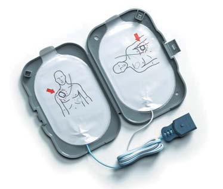
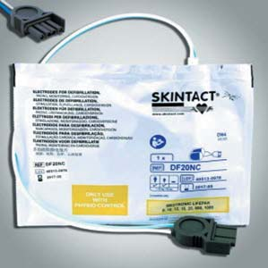
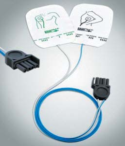
Фото 7 а-в.
Якщо дефібриляція проводиться у хворого з постійним кардіостимулятором, слід уникати близького розташування електродів і кардіостимулятора, щоб не пошкодити останній. Для безпечного проведення електроімпульсного розряду відстань від електрода дефібрилятора до кардіостимулятора має бути щонайменше 8 см.
Безпека
Спроба дефібриляції має виконуватися без наражання на небезпеку членів реанімаційної команди. Слід звернути увагу на мокрі предмети поблизу пацієнта або мокре вбрання, перед виконанням дефібриляції треба витерти насухо грудну клітку пацієнта. Ніхто не повинен посередньо чи безпосередньо торкатися пацієнта або металевих предметів, з якими стикається пацієнт.
Особі, яка виконує дефібриляцію, забороняється торкатися будь-якого фрагмента поверхні електродів, а гель-провідник не повинен розливатися по поверхні грудної клітки. Застосування гелевих підкладок знижує ризик ураження, тому їх необхідно використовувати за найменшої можливості. Особа, яка обслуговує дефібрилятор, перед тим, як виконати розряд, має переконатися, що ніхто не торкається пацієнта (фото 8).
В атмосфері, збагаченій киснем, іскра внаслідок недбалого прикладання класичних електродів дефібрилятора може бути причиною опіків шкіри хворого або пожежі. Якщо застосовується кисень для боротьби з гіпоксією, треба забрати з пацієнта кисневу маску або кисневий назальний катетер і відсунути їх на відстань не менше 1 метра від грудної клітки. Слід мінімізувати ризик появи іскри під час проведення дефібриляції. Теоретично поява іскри менш імовірна при застосуванні самоприклеювальних електродів, ніж при застосуванні класичних електродів.
З метою оптимального поширення струму пластини електродів при проведенні зовнішньої дефібриляції повинні бути для дорослих – діаметром 12-14 см, для дітей – 8 см і для немовлят – 4,5 см.
Застосування автоматичної зовнішньої дефібриляції у стоматологічній клініці
Незважаючи на обмежену кількість наукових даних, застосування АЗД в умовах стоматологічної клініки має вважатися методом, що дозволяє виконати своєчасну дефібриляцію (до 3 хвилин від знепритомнення), особливо у місцях, де персонал не має навичок розпізнавання ритмів або рідко застосовує дефібрилятори. У таких місцях слід впровадити ефективну систему підготовки та ресертифікації медичного персоналу. Певна кількість працівників має пройти підготовку, мета якої – виконання першого розряду протягом трьох хвилин після знепритомнення на території лікувального закладу.
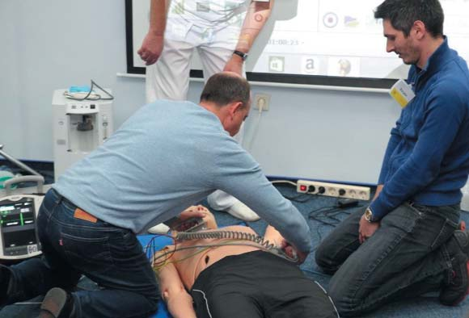
Підготовку із застосування цих пристроїв можна отримати набагато швидше і легше, ніж із застосування мануальних професійних дефібриляторів. Автоматичні пристрої дають можливість виконати дефібриляцію ширшому колу медичного і медсестринського персоналу. Особи з медичною освітою та обов'язком проведення СЛР повинні проходити навчання, мати доступ до обладнання і отримати повноваження для виконання дефібриляції.
Спроба дефібриляції, виконана першою особою, що надає невідкладну допомогу, відіграє вирішальну роль, а запізнення з виконанням першого розряду – головний фактор, що загрожує виживанню при зупинці кровообігу.
Мануальні дефібрилятори мають кілька переваг у порівнянні з АЗД. Вони дають можливість особі, яка виконує дефібриляцію, розпізнати ритм і швидко виконати розряд, не чекаючи алгоритму аналізу серцевого ритму, який запрограмований в АЗД. Це істотно зменшує перерви у натисканні грудної клітки. Мануальні дефібрилятори також мають додаткові функції, як, наприклад, можливість виконання синхронізованого розряду та черезшкірної кардіостимуляції. Головний недолік цих приладів – це те, що особа, яка їх обслуговує, повинна вміти аналізувати ритм ЕКГ, і тому у порівнянні з АЗД потрібне додаткове навчання.
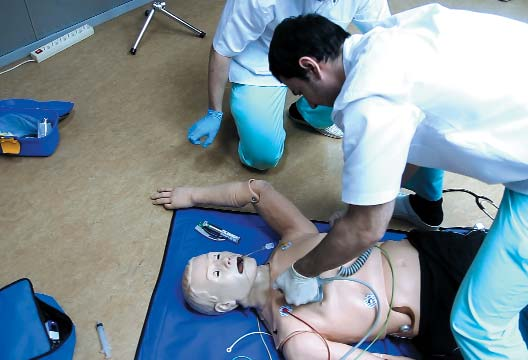
Кардіоверсія
Якщо за певної клінічної ситуації для лікування передсердної або шлуночкової тахіаритмії застосовується електрична кардіоверсія, розряд дефібрилятора повинен бути синхронізований таким чином, щоб він відбувся під час збудження та скорочення шлуночків, тобто під час хвилі QRS на висоті зубця R, a не в період реполяризації в межах зубця T. Це дозволяє знизити ризик виникнення фібриляції шлуночків шляхом уникання розряду в період відносної рефрактерності. Більшість мануальних дефібриляторів має перемикач, який дозволяє подати розряд одночасно з появою зубця R на ЕКГ. Електроди розміщуються на грудній клітці, і кардіоверсія виконується так само, як дефібриляція, проте особа, котра виконує кардіоверсію, має враховувати невелику затримку між натисканням кнопок на електродах і виникненням розряду в момент появи наступного зубця R. У цей час не можна рухати електроди дефібрилятора, тому що комплекс QRS не буде розпізнано (фото 9).
Незважаючи на те, що у стандартах рекомендується негайне виконання дефібриляції всіх ритмів, які цього вимагають, останні дослідження, що стосувалися долікарняних зупинок кровообігу, засвідчили, що проведення СЛР перед дефібриляцією може бути корисним у випадку, коли від знепритомнення минуло досить багато часу. Бригада рятувальників повинна виконувати СЛР протягом 2-х хвилин перед дефібриляцією у пацієнтів у тих випадках, коли минуло багато часу після знепритомнення (понад 5 хв). Скільки часу триває зупинка кровообігу, часто важко визначити, і тому простіше рекомендувати рятувальникам виконувати СЛР перед спробою дефібриляції в кожному випадку зупинки кровообігу, свідками якої вони не були. Немає доказів ні на підтвердження, ні на спростування теорії проведення СЛР перед дефібриляцією. Але в разі зупинки кровообігу в лікувальному закладі дефібриляцію слід виконати якомога швидше.
Раптова зупинка серця уражає людей будь-якого віку і рівня фізичного навантаження, як правило, без попередження. Життя можна зберегти, якщо треновані особи починають серцево-легеневу реанімацію (СЛР) і забезпечують дефібриляцію протягом кількох хвилин.
Література
- Soar J., Nolan J.P., Bottiger B.W., et al. European Resuscitation Council guidelines for resuscitation 2015 section 3 adult advanced life support. Resuscitation. 2015;95:99-146.
- Perkins G.D., Travers A.H., Considine J., et al. Part 3: Adult basic life support and automated external defibrillation: 2015 International Consensus on Cardiopulmonary Resuscitation and Emergency Cardiovascular Care Science With Treatment Recommendations. Resuscitation. 2015;95:e43-e70.
- Berdowski J., Berg R.A., Tijssen J.G., Koster R.W. Global incidences of out-of-hospital cardiac arrest and survival rates: systematic review of 67 prospective studies. Resuscitation. 2010;81:1479-1487.
- Blom M.T., Beesems S.G., Homma P.C., et al. Improved survival after out-of-hospital cardiac arrest and use of automated external defibrillators. Circulation. 2014;130:1868-1875.
- Hasselqvist-Ax I., Riva G., Herlitz J., et al. Early cardiopulmonary resuscitation in out-of-hospital cardiac arrest. N Engl J Med. 2015;372:2307-2315.
- Johnson B., Coult J., Fahrenbruch С., et al. Cardiopulmonary resuscitation duty cycle in out-of-hospital cardiac arrest. Resuscitation. 2015;87:86-90.
- Perkins G.D., Handley A.J., Koster R.W., Castren M., Smyth M.A.. European Resuscitation Council Guidelines for Resuscitation 2015: Section 2. Adult basic life support and automated external defibrillation.